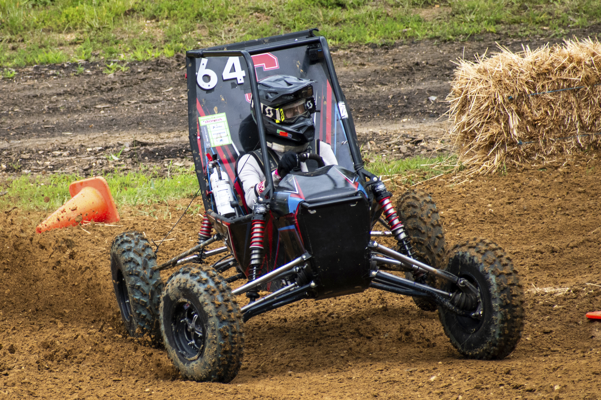

Projects
A collection of relevant engineering projects. Includes both personal work and projects as a member of Cornell Baja Racing.

Four-Wheel Drive Driveshaft
Currently designing the driveshaft four-wheel drive system for Cornell Baja Racing's next car: TG22!

Four-Wheel Drive Guarding
Designed a rules-compliant, drivetrain guarding system using SolidWorks for Cornell Baja Racing's TG21 car. Design focused on part serviceability and weight reduction. Personally manufactured all components by hand, in house.

Custom Caliper Brackets
Designed and manufactured custom caliper mounting brackets for a restored 1988 Chevrolet Camaro.